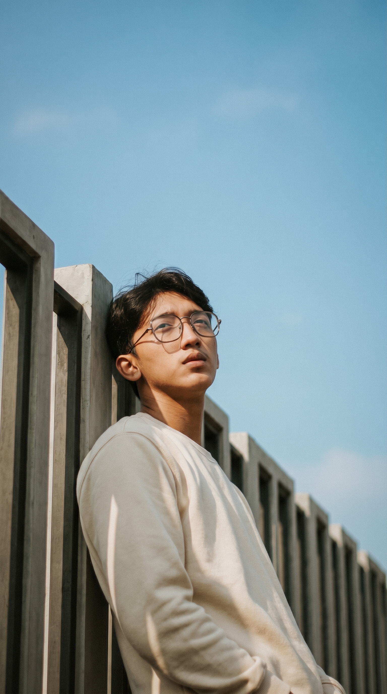

Halo, saya El Syajaah
Pengembang Web di Zenithy Development
Saya mengubah ide-ide kompleks menjadi aplikasi web yang elegan, fungsional, dan berpusat pada pengguna. Saya bersemangat membangun solusi digital komprehensif yang memecahkan masalah nyata.
Tentang Saya
Perkenalkan, saya Dhohuk Gemalo El Syaja'ah. Seorang mahasiswa Teknik Informatika di Universitas Muhammadiyah Purwokerto yang memiliki hasrat tinggi pada pengembangan web, integrasi sistem, dan manajemen media. Saya aktif memimpin di organisasi kemahasiswaan dan senang mengimplementasikan teknologi untuk skala riil.
Perjalanan Saya
Perjalanan saya di dunia IT dimulai sejak kelas 8 SMP. Minat awal ini terus berkembang seiring ketertarikan saya pada logika sistem dan arsitektur web modern, membawa saya mendalami Teknik Informatika.
Saya percaya pada filosofi kode yang bersih dan desain fungsional. Saat ini, fokus eksplorasi saya meluas ke framework seperti Laravel, optimasi database, hingga AI Prompt Engineering.
Selain *coding*, saya menjabat sebagai Kepala Departemen Media dan Komunikasi (Medkom), merancang strategi kampanye digital, dan kerap dipercaya sebagai instruktur lokakarya desain grafis.
Fakta Singkat
- ➤ Nama: Dhohuk Gemalo El Syaja'ah
- ➤ Studi: S1 Teknik Informatika, Univ. Muhammadiyah Purwokerto
- ➤ Lokasi: Cilacap, Jawa Tengah
- ➤ Keahlian: Full Stack Developer & Digital Marketing
Keahlian
Berikut adalah visualisasi keahlian yang saya kuasai. Saya memadukan kemampuan teknis (Backend/Frontend) dengan sentuhan kreatif dalam desain dan optimalisasi digital.
Teknologi & Keterampilan
Proyek Pilihan
Kumpulan proyek yang pernah saya kerjakan, dari *landing page* hingga sistem e-voting terintegrasi berskala regional.
Sistem E-Voting & Command Center
Platform pemilihan elektronik terenkripsi dan aplikasi operasional Command Center terpusat untuk manajemen Musyawarah Cabang (Musycab).
KAFA Edu (Landing Page)
Landing page statis yang elegan untuk sebuah lembaga pendidikan, dibuat dengan HTML, CSS, dan JavaScript murni.
Penerbit Amerta (Profil)
Website profil perusahaan untuk penerbit buku, menampilkan katalog dan informasi kontak.
Web Profile PC IMM A.K. Anshori
Web Profile PC IMM A.K. Anshori Purwokerto untuk media informasi publik yang dinamis.
Pengalaman & Aktivitas
Perjalanan profesional dan organisasi saya dalam ranah rekayasa perangkat lunak dan manajemen media komunikasi.
Freelance Web Developer
Zenithy Development
- Mengembangkan aplikasi e-voting terintegrasi menggunakan Laravel dan Livewire.
- Membangun infrastruktur Command Center dan manajemen administrasi acara regional.
- Menyediakan solusi web pendaftaran dan manajemen portofolio.
Digital Marketing Specialist & Programmer
Perusahaan Penerbitan Media
- Memelihara dan mengoptimalkan visibilitas digital produk perusahaan.
- Bekerja dalam tim untuk mengeksekusi strategi pemasaran digital dan kebutuhan IT internal.
Pimpinan Organisasi & Instruktur
Universitas Muhammadiyah Purwokerto
- Kepala Departemen Media dan Komunikasi (Medkom) (2026-2027).
- Instruktur dan Pemateri Workshop Desain Grafis & Fundamental Canva (2026).
- Koordinator Eksekutif Muda BEM KM UMP (2024-2025).
- Kabid Hikmah Politik Kebijakan Publik di IMM Sabilul Hasbi (2023-2025).
Mari Terhubung
Terbuka untuk diskusi mengenai pengembangan proyek web (terutama Laravel/PHP), kolaborasi desain, atau ngobrol soal *tech*. Hubungi aku lewat WhatsApp!
Mulai Ngobrol